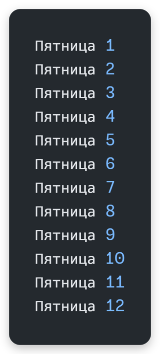

Циклы
Зачем нужны циклы
Компьютеры круче людей в том, что могут делать одни и же действия много раз, но быстро и без усталости!
Иногда, определенную часть кода, нужно повторить множество раз.
Можно, конечно, скопировать и вставить это выражение... А что делать, если нужно его повторить, например, 10 тысяч раз?
Копирование-Вставка в этом случае - боль 😵💫🥴
Python - Повторение кода


print("Как правильно учить программирование?")
print("1 Практика !")
print("2 Практика !")
print("3 Практика !")
print("4 Практика !")
print("5 Практика !")
# …и так ещё 9 995 раз ⛔️⛔️⛔️
print("10000 Практика !")
Многократное повторение кода
В языках программирования для многократного повторения кода используются циклы.
Любой цикл состоит из условия и тела цикла. Код в теле цикла выполняется много раз, пока условие остаётся True.
Цикл for
Цикл for в Python
Используется, когда заранее известно, сколько раз нужно повторить код.
Самый простой способ ― функция range(start, stop, step).
start― с какого числа начать (по умолчанию 0).stop― до какого числа (НЕ включая его!).step― шаг изменения счётчика (по умолчанию 1).
Такой цикл ещё называют счётчиком.
Python - Цикл for
for i in range(1, 10001): # от 1 до 10000 включительно
# тело цикла (одна «итерация»)
print(f"{i} Практика !")
- Инициализация переменной-счётчика
i = 1происходит внутриrange(). - Цикл выполняется, пока
i < 10001. - После каждой итерации Python сам увеличивает
iна 1.
Цикл while
Цикл while
Повторяет код пока условие истинно. Проверяет условие до выполнения тела, поэтому это цикл с предусловием.
Python - Цикл while
coin: int = 5 # начальное значение — 5 монеток
# Выполнять цикл ПОКА монеток больше 0
while coin > 0:
print(f"Осталось собрать монеток {coin}")
coin -= 1 # уменьшить счётчик
Можно написать бесконечный цикл, если условие всегда True:
Python - Бесконечный цикл while
while True:
# тело цикла: делать что-то бесконечно
...
Операторы continue и break
break и continue
break— полностью прерывает выполнение цикла.continue— пропускает оставшуюся часть тела цикла и переходит к следующей итерации.
Пример с break — остановимся на числе 13:
Python - Оператор break
for i in range(1, 21):
if i == 13:
break # досрочно выходим
print(f"Пятница {i}")
После «Пятница 12» цикл завершится, и в консоль больше ничего не выведется.
Пример с continue — пропустим число 13:
Python - Оператор continue
for i in range(1, 21):
if i == 13:
continue # пропускаем эту итерацию
print(f"Пятница {i}")
Когда i == 13, строка не печатается, затем цикл продолжается с 14.
Сценарии использования циклов
Цикл for в обратном порядке
Делаем шаг -1 это третий парметр в range():
for i in range(5, 0, -1):
print(i) # 5 4 3 2 1
Шаг цикла for
Например, вместо +1 зададим шаг +2, чтобы получить только чётные значения счётчика:
for i in range(0, 10, 2):
print(i) # 0 2 4 6 8
Вложенные циклы
Выведем таблицу умножения (матрицу 9×9):
\t это табуляция (отступ)
end="" это параметр, который говорит, что не нужно переходить на новую строку
for i in range(1, 10):
for j in range(1, 10):
print(f"{i * j}\t", end="")
print() # перенос строки после внутреннего цикла
Подсчёт количества
Посчитаем, сколько чётных чисел встречается от 0 до 10:
count = 0 # объявляем переменную ЗА пределами цикла!
for i in range(0, 11):
if i % 2 == 0:
count += 1
print(count) # 6 штук (0 2 4 6 8 10)
Подсчёт суммы
Классическая задача — найти сумму элементов. Найдём сумму всех чисел от 0 до 10:
sum = 0
for i in range(0, 11):
sum += i
print(sum_) # 55
# 0 + 1 + 2 + 3 + 4 + 5 + 6 + 7 + 8 + 9 + 10 = 55